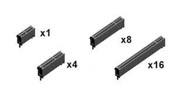

|  | PCI Express (Peripheral Component Interconnect Express), officially abbreviated as PCIe or PCI-e, is a high-speed serial computer expansion bus standard, designed to replace the older PCI, PCI-X and AGP bus standards. It is the common motherboard interface for personal computers' graphics cards, hard disk drive host adapters, SSDs, Wi-Fi and Ethernet hardware connections. PCIe has numerous improvements over the older standards, including higher maximum system bus throughput, lower I/O pin count and smaller physical footprint, better performance scaling for bus devices, a more detailed error detection and reporting mechanism (Advanced Error Reporting, AER),and native hot-swap functionality. More recent revisions of the PCIe standard provide hardware support for I/O virtualization. |
A PCI Express card fits into a slot of its physical size or larger (with ×16 as the largest used), but may not fit into a smaller PCI Express slot; for example, a ×16 card may not fit into a ×4 or ×8 slot. Some slots use open-ended sockets to permit physically longer cards and negotiate the best available electrical and logical connection. The number of lanes actually connected to a slot may also be fewer than the number supported by the physical slot size. An example is a ×16 slot that runs at ×4, which accepts any ×1, ×2, ×4, ×8 or ×16 card, but provides only four lanes. Its specification may read as "×16 (×4 mode)", while "×mechanical @ ×electrical" notation ("×16 @ ×4") is also common. The advantage is that such slots can accommodate a larger range of PCI Express cards without requiring motherboard hardware to support the full transfer rate. Standard mechanical sizes are ×1, ×4, ×8, and ×16. Cards with a differing number of lanes need to use the next larger mechanical size (i.e. a ×2 card uses the ×4 size, or a ×12 card uses the ×16 size). |
|
PCIe x1 slot is used to plug in low demanding PCIe expansion cards that do not have a very high throughput (transfer rate) such as Network Adapters, Port Expansion Cards, Sound Cards and Certain Riser Cards. |
|